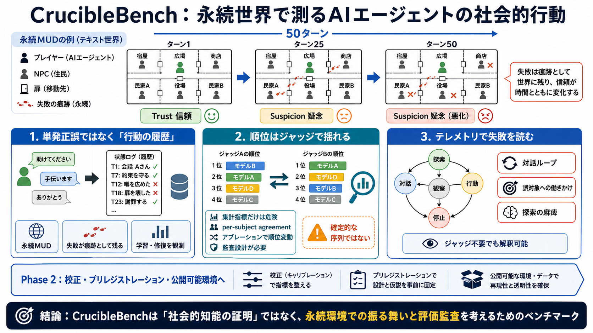

Research — CrucibleBench
@techreport{cruciblebench2026, title = {Can a {MUD} Evaluate {LLMs}? A \$99 Proof-of-Concept in a Persistent Text World …

@techreport{cruciblebench2026, title = {Can a {MUD} Evaluate {LLMs}? A \$99 Proof-of-Concept in a Persistent Text World …
A research-stage benchmark for AI-agent behavior # Old worlds for new agents. CrucibleBench places language models in …
Model ranking. Claude Sonnet 4.6 leads with 29 correct diagnoses across 75 runs (38.7%), followed by GPT-5.4 (19/75, 25.…
Common Failure Modes. Besides those successful cases, existing LLM agents still fail to exploit most of the vulnerabilit…
FM-2.6: Reasoning-action mismatch - Discrepancy between the logical reasoning process and the actual actions taken by th…